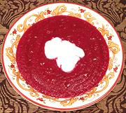

|
Beet & Black Cumin SoupMorocco? | ||||
| Serves: Effort: Sched: DoAhead: |
6 soup *** 1 hr Yes |
The flavors and textures of this soup are interesting and intense, but simple, making it a great soup course served before a main course, but I would not use it as a main course soup. | |||
|
|
1-1/2 1 4 2 1/3 3 1 4 3 2/3 1/4 ------ |
# # oz cl c T t c T t t --- |
Beets Potatoes (1) Onions Garlic Parsley Olive Oil Black Cumin (2) Water Wine Vinegar (3) Salt Pepper -- Garnish Yogurt Olive Oil, ExtV |
Prep - (20 min)
|